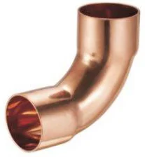
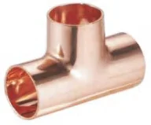

Złączki lutowane Besco
Miedziane złączki kapilarne do lutu miękkiego i twardego: metryczne serie 4000 i 5000 według EN 1254, calowe ANSI B16.22 oraz G-size do wysokich ciśnień.
- Indeksy
- 893
- Średnice
- 6–108 mm
- Producent
- Besco


Komu to sprzedasz i jak.
- Kto kupuje w Twojej hurtowni
- Instalatorzy pracujący w klasycznej technologii, chłodnictwo i klimatyzacja oraz utrzymanie ruchu w przemyśle.
- Argument sprzedażowy
- Jeden dostawca na kształtki metryczne, calowe i G-size do 80 bar, bez dokładania kolejnej marki.
Linie w systemie
Źródło: katalog Besco 2026| Linia | Średnice | Zastosowanie | Parametry | Indeksy | Akcja |
|---|---|---|---|---|---|
 Seria 4000 i 5000, EN 1254Besco Seria 4000 i 5000, EN 1254Besco | 6–108 mm | woda, CO, gaz, przemysł | 25 barDVGWKIWAWRAS | 513 | Indeksy |
 Calowe ANSI B16.22, seria KBesco | 1/4″–4 1/8″ | woda, CO, gaz, przemysł | 25 bar | 315 | Indeksy |
 G-size do wysokich ciśnieńBesco | 22–76,1 mm | chłodnictwo, przemysł | 20–80 bar · do 150 °C | 65 | Indeksy |
Co warto wiedzieć.
Odpowiedzi według dokumentacji producenta. Resztę wyjaśni handlowiec.
Zadzwoń: 798 807 106Do jakiego lutowania są te kształtki?
To kształtki kapilarne do lutowania miękkiego i twardego.
Jakie parametry ma seria EN 1254?
Średnice 6–108 mm, do 25 bar, od −20 do 110 °C. Aprobaty DVGW, KIWA i WRAS.
Czym są seria K i G-size?
Seria K to calowe kształtki według ANSI B16.22 w rozmiarach od 1/4″ do 4 1/8″. G-size to kształtki 22–76,1 mm na ciśnienia 20–80 bar i temperatury do 150 °C, do chłodnictwa i przemysłu.
Czy mogę zamówić po numerze artykułu?
Tak. Wszystkie 893 indeksy lutowane Besco znajdziesz w katalogu z wyszukiwarką. Dodaj je do listy i wyślij do wyceny.
Zapytaj o ofertę na złączki lutowane Besco.
Ceny hurtowe, dostępność i terminy dostaw przygotujemy w ciągu jednego dnia roboczego.
Pozostałe systemy
Wszystkie systemy 01 · Besco
01 · BescoZłączki zaciskane
Miedź press w profilach V i M, linie gazowe, stal węglowa i zawory kulowe press.
1 043 indeksy · 12–108 mmZobacz → 02 · Pegler Yorkshire
02 · Pegler YorkshireZłączki na wcisk
Tectite Classic, Pro, 316 i Carbon oraz zawory na wcisk. Montaż bez narzędzi i ognia.
ok. 530 indeksów · 10–54 mmZobacz → 03 · Pegler Yorkshire
03 · Pegler YorkshireZłączki skręcane
Kuterlite K600 i K900 Pro do miedzi, K700 do rur PE oraz zawory z końcówkami zaciskowymi.
ok. 470 indeksów · 6–63 mmZobacz →